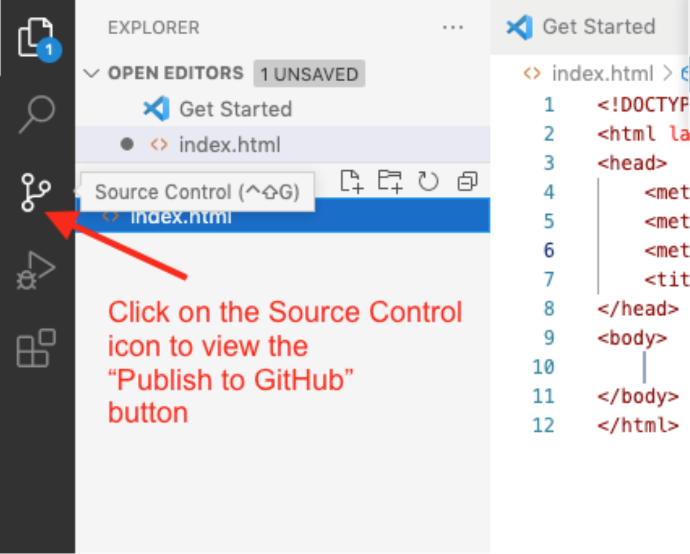
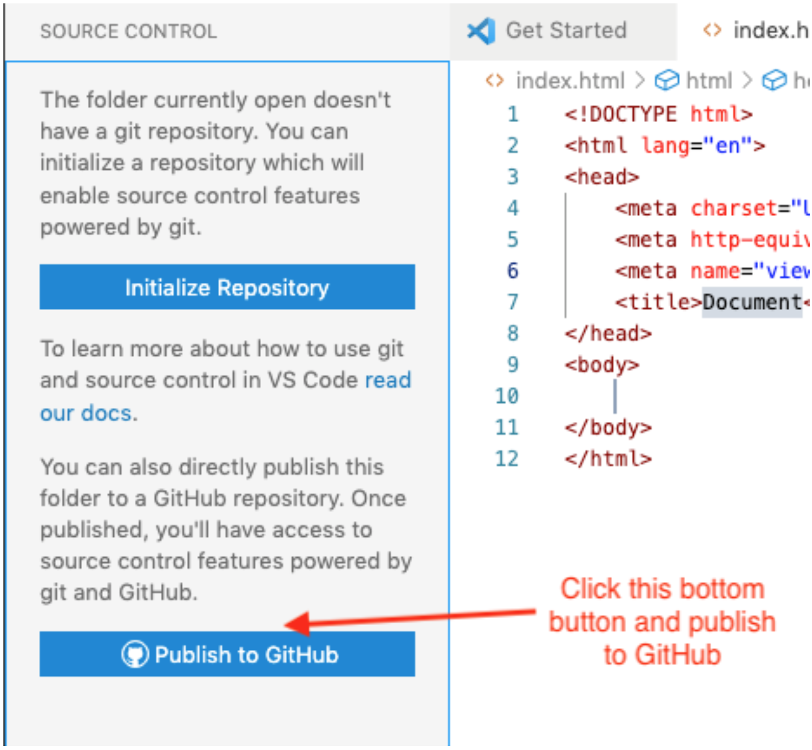
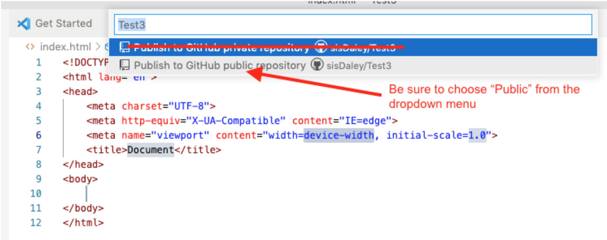

In this course, you will be publishing to GitHub for assessment. Your public GitHub space is
rendered through a free service named GitHub Pages. Your peers, graders, and
the instructor will then be able to access your site for collaboration and feedback. You have
already established a GitHub account and installed git technology so that you can commit and
push/upload your work to your cse121b GitHub repository.
"GitHub Pages is a static site hosting service designed to host your
personal, organization, or project pages directly from a GitHub repository" - docs.github.com
Instructions
Create Local Content
Create a course folder on your computer named "cse121b" (lower case, no
spaces).
In Visual Studio Code, open that cse121b folder use File -> Open Folder.
Create a new file in that cse121b folder named index.html.
With the index.html file open in VS Code, type the snippet into the editor and click
enter:
html:5
This is a shortcut for creating the basic HTML5
document structure
that looks something like this:
Change the <title> element text content form "Document" to
"Your Full Name | CSE 121B | BYU-Idaho"
Add your name to a first level heading element <h1> within the
body opening and closing tags.
Add the course name as a second level heading element <h2> after your
name heading.
Save the file.
Check Your Work
Publish the cse121b folder to GitHub
In VS Code, open your cse121b folder if it is not already open.
The system may prompt you to trust the file source. Click Trust to
continue.
Select the Source Control icon in VS Code's Activity Bar.
By default, the Activity Bar is found on the left-hand side of the screen
and will have up to five icons. If the Activity Bar is not visible, click View ->
Appearance -> Activity Bar to turn it visible.

Figure 1: Source Control Icon in VS Code's Activity Bar
Click the blue button that says Publish to GitHub. If you don't see this
button, make sure you have all other git repo folders closed.

Figure 2: Publish to GitHub Button in the Source Control panel
Click Allow if you get a message saying "The extension 'GitHub' wants
to sign in using GitHub."
If you are prompted for an authorization for Visual Studio Code to Access GitHub, click
Continue.
If you are asked to allow the page to open "Visual Studio Code", click
Allow.
You may also be asked to allow an extension to open this URI, click Open.
VSCode will choose the folder you have open, the cse121b folder as the the repository and
give you the option to "Publish to GitHub public repository". Choose the one that says
"public", not private. This will make a new public repository in our GitHub
account.

Figure 3: Publish to GitHub public repository
It will show a list of the files in the cse121b folder. They will be selected by default
so
just
click OK to include the files in the new repository.
You may get a prompt to "Authorize Git Credential Manager" here. Click
Authorize.
If you get a message asking if you'd like to periodically run fetch you can say "Yes", but
it is not necessary.
If you look at your GitHub account on github.com, a new repository named cse121b will be
there along with any files or folders that were in your local cse121b folder. This local
folder is now connected to the remote repository on GitHub and is a repository itself.